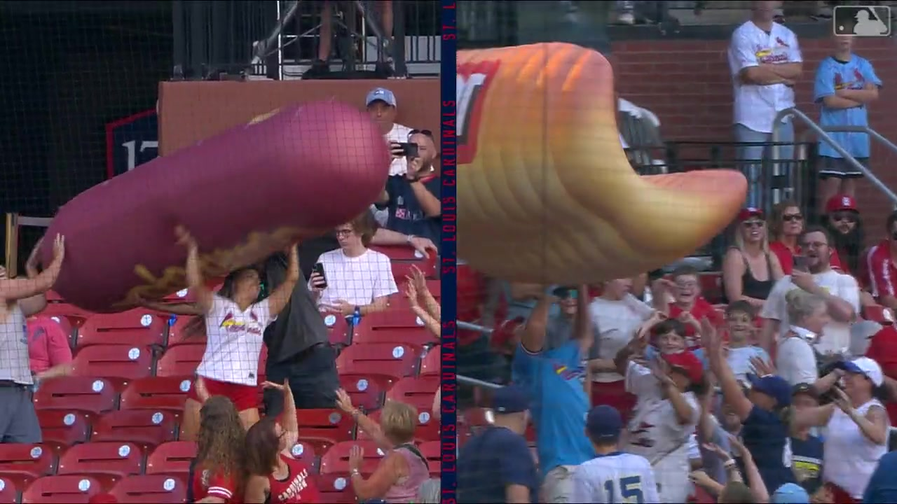
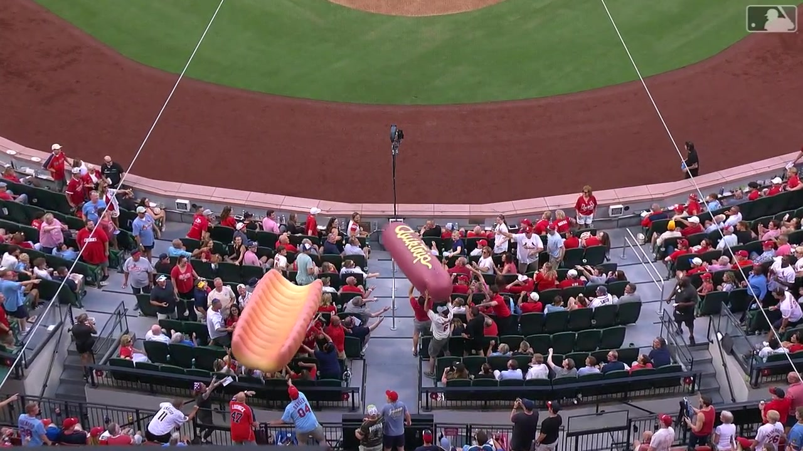
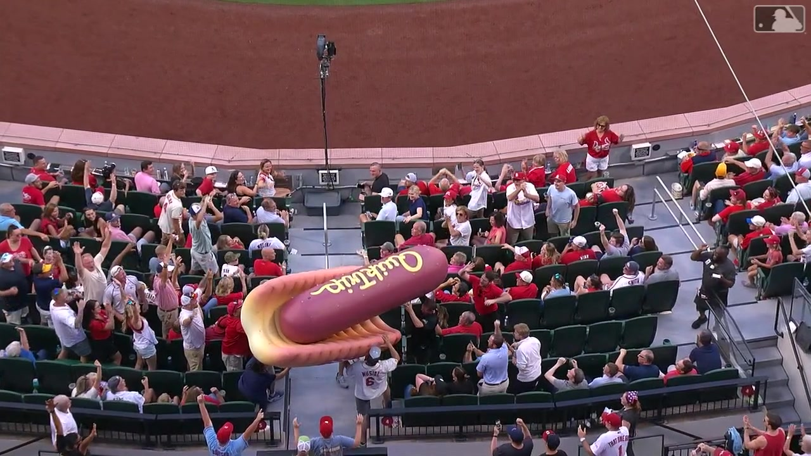

案例发生了什么
2026 年 7 月 7 日，圣路易斯红雀在布希体育场对阵密尔沃基酿酒人的比赛中设置局间互动。MLB 官方视频画面可确认，带有 QuikTrip / QT 标识的巨型充气热狗与面包从不同位置进入看台，观众必须协力将它们在人群上方传递并完成会合。MLB 官方说明明确写明：若两件道具成功相遇，现场球迷获得免费热狗。一个食品促销由此被改写成全场共同完成的可视化任务。
官方视频真实画面
以下图片均截取自 MLB / 圣路易斯红雀官方 40 秒视频，不使用生成图；每张图的来源都回链官方页面。




动作拆解
- 把“热狗放进面包”放大成无需说明的一眼任务，降低不同年龄和观赛经验人群的参与门槛。
- 让巨型道具沿看台移动，把固定座位变成协作节点；每一次托举都为下一位观众提供明确动作。
- 用两个物体能否会合制造可被全场同时追踪的进度和悬念，比主持人口播抽奖更具画面感。
- 把成功结果与全场免费热狗绑定，使参与者、旁观者和场馆餐饮共同分享同一个结局。
- 官方 40 秒视频保留了任务、过程与结果，天然适合赛后短视频二次传播。
可复用的方法把促销奖品本身变成互动道具：产品视觉负责讲规则，集体协作负责制造情绪，全场奖励负责完成商业闭环。
传播与商业机制
规则可视化
热狗与面包就是规则本身，不需要复杂说明。
参与连续性
单个观众只需完成一次托举，却共同构成整条协作链。
结果共享
成功结果对应全场奖励，旁观者也被纳入共同利益。
内容再生产
巨大比例、移动路径与最终会合天然形成可剪成短视频的起承转合。
适用条件与风险
- 巨型道具的重量、材质、行进路线、看台坡度与人员密度必须经过安全评估，并预留工作人员干预点。
- 奖励规则要在活动开始前明确，避免“成功会合”与领取方式、库存和兑现时间产生歧义。
- 画面能确认 QuikTrip / QT 品牌露出，但 MLB 页面没有披露具体权益称谓、免费热狗数量、核销率或销售影响；本站不由画面反推合同层级与效果数据。
SOURCE & EVIDENCE LEDGER
发现入口与官方素材主源
用户提供的发现入口
SocialMarketing 视频号于 2026-07-28 发布二次传播视频。2026-08-03 抓取时显示：点赞 1,131、转发 1,254、收藏 1,045、评论 23；属于二次传播页的动态快照，不能作为原活动效果。
微信视频号原链接 →来源备注本案例以 MLB 官方页为事实与图片主源；微信视频号用于记录该创意在中文营销圈的二次传播。二次传播页的互动数字不等于布希体育场活动效果，也不能反推免费热狗数量或销售提升。